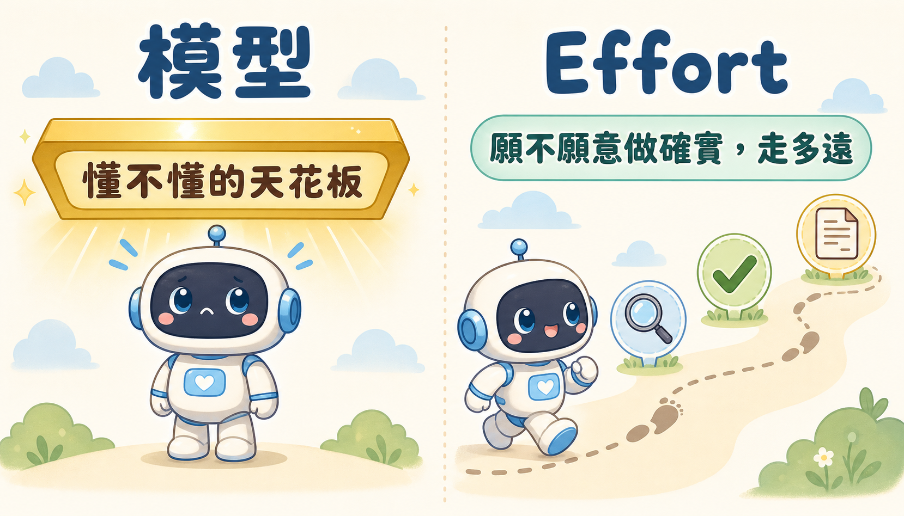
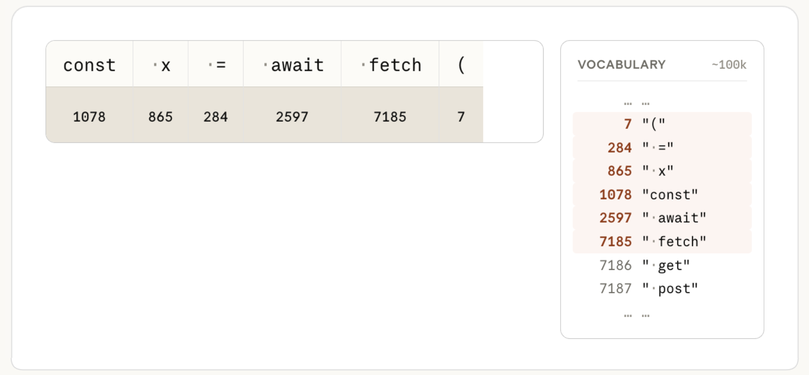
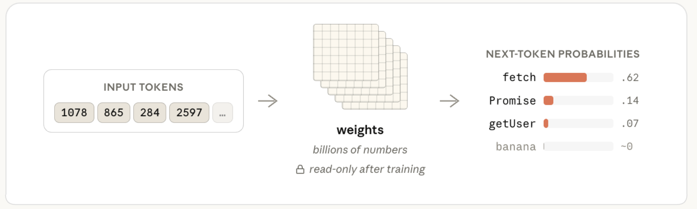
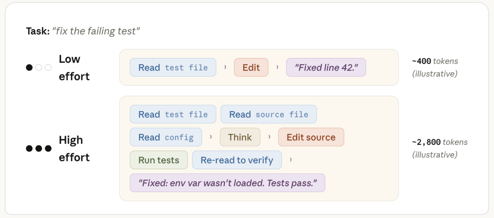
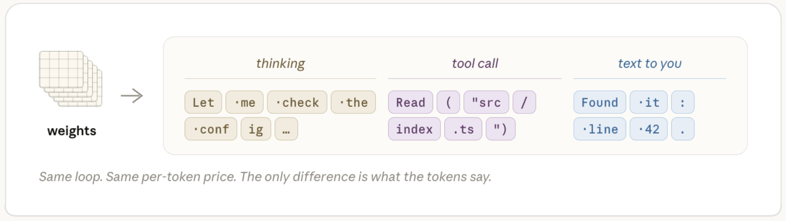
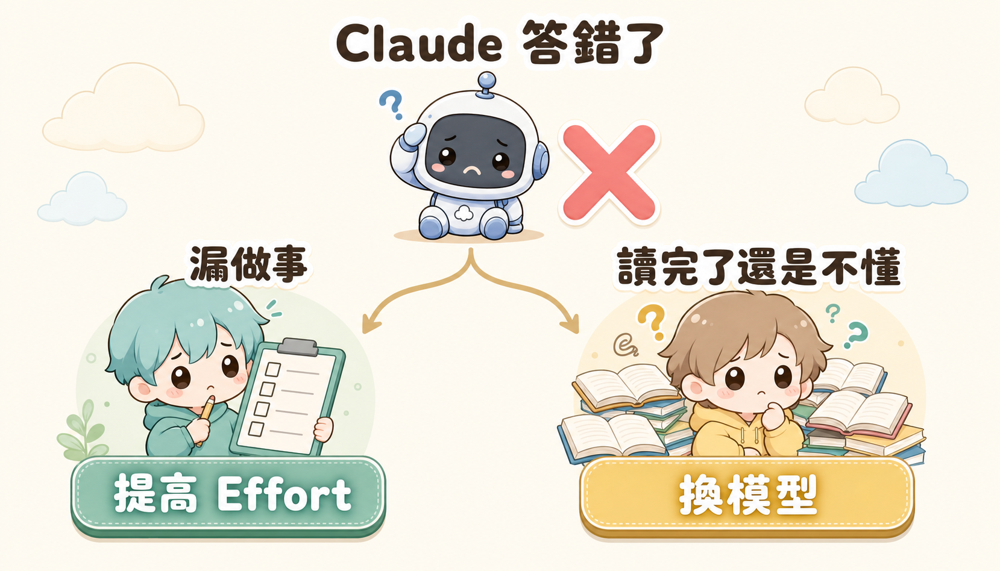
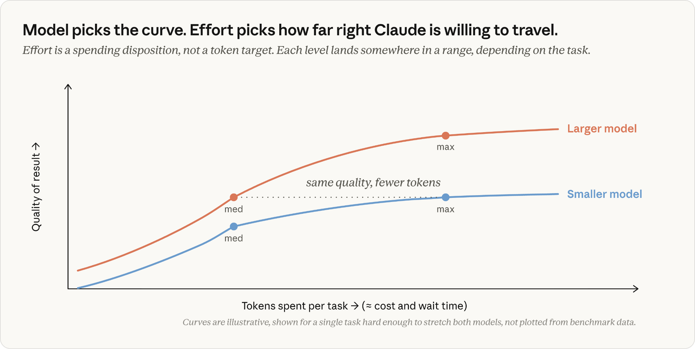
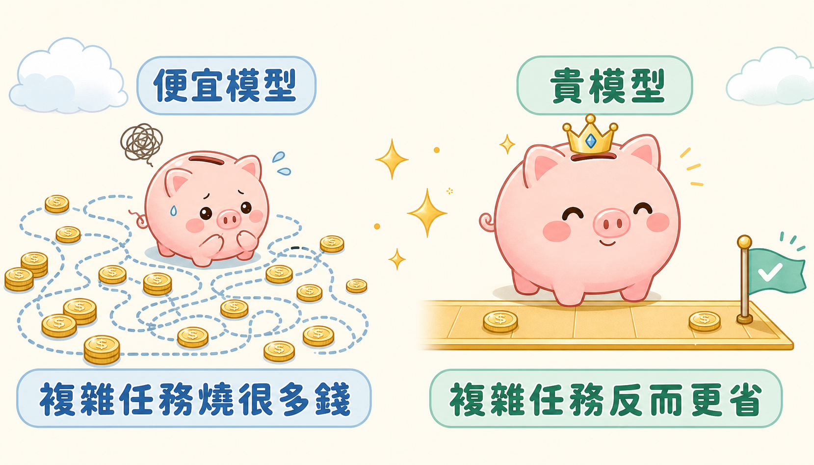

你一定遇過這個場景：Claude Code 給出的答案不對。直覺反應通常是兩個按鈕二選一——換一顆更貴的模型，或者把 Effort 轉到最高。但很多人選錯的次數，比選對的次數還多。換了更貴的模型，結果它一樣栽在同一個坑；轉到最高 Effort，結果只是把同一個錯誤答案，講得更長、更有自信，帳單也更貴而已。
問題不在於「要不要花更多錢」，而在於你根本沒有先搞清楚：Claude 這次是真的不懂，還是懂但沒做確實。這兩件事的解法完全不一樣，搞混了處理，就是最常多花冤枉錢的原因。
舊直覺為什麼會失靈
多數人對「加大力度」的直覺，來自過去用慣的東西：照片不清楚就加畫質、跑不動就加記憶體、印表機印出來太淡就多印一次。這套邏輯放到 Claude 身上會失靈，因為它把兩種完全不同的東西，誤會成同一顆旋鈕。
一個是模型——決定 Claude「懂不懂」這件事，也就是它腦袋裡裝了多少東西、能不能看懂複雜的問題。另一個是Effort——決定 Claude「願不願意花工夫」把懂的東西做確實，例如願不願意多讀幾個檔案、多檢查幾次。
模型是天花板，Effort 是你允許它在天花板底下走多遠。把 Effort 轉到最大，天花板不會變高；換成更貴的模型，如果問題只是它偷懶漏看一個檔案，你也只是花更多錢重複同一個懶惰。

要搞懂什麼時候該動哪一顆旋鈕，得先知道 Claude 回答你之前，背後到底發生了什麼事。
打開機蓋看一看：一個寫死的大腦，和一個看你付多少錢的工作流程
先講模型。當你送出一句話，連同你的說明文件、對話紀錄、打開的檔案，Claude 做的第一件事，是把這些文字拆成一個個小碎片，每個碎片對應一個固定的數字編號——這一步純粹是格式轉換，跟聰不聰明無關。下面這張圖示範了這個過程：一段程式碼被拆成好幾小塊，每一塊都查表換成一個固定的數字，Claude 的內部字典裡大約存了十萬個這樣的編號。

這串數字接著會通過 Claude 的「大腦」——一組在訓練的時候就已經定型、多達數十億個數字的參數。重點是「定型」兩個字：這組參數，在你使用的當下是固定死的、不能改。你的提示詞寫得再仔細、說明文件堆得再厚，都不會讓 Claude 的大腦多長一塊肉出來，只是在幫它「這一次」猜答案時提供線索。換句話說，你給的資料是在「指路」，不是在「教它學新東西」。這也是為什麼你這次對話教會 Claude 一個知識，下次開新對話它就忘光光：它每次都是同一顆定型的大腦，從零開始重新猜。

這也順便解釋了 Claude 為什麼有時候會「一本正經地講錯」。它自信地講出一個根本不存在的東西，不是因為它「查不到資料」，而是它那顆固定的大腦，根據以前看過的內容，算出這個答案「聽起來最像對的」。如果某個工具是在它學習資料收集完之後才出現的，它腦袋裡就永遠不會有這個東西——你唯一的辦法，是當場把正確答案講給它聽，而不是期待它自己想起來。
那 Effort 到底在做什麼？它不是「想比較久」，而是決定 Claude 願意在同一顆大腦底下，多繞幾圈路把事情做確實：要讀幾個檔案、要檢查幾次、卡關的時候要不要自己想辦法排除，還是直接停下來問你。下圖是同一個「修一個壞掉的測試」的任務，在 Effort 調低和調高時實際跑的路徑：Effort 低的時候，Claude 讀一個檔案就直接動手改，順手回你「改好了」；Effort 高的時候，它會多讀設定檔跟原始檔案、想一下、改完還會跑一次測試確認，最後告訴你問題到底出在哪裡。同樣一顆大腦，同樣「懂不懂」的天花板，但因為多繞了幾步路，答案的完整度差了一大截。

而不管 Claude 是在心裡盤算、動手操作檔案，還是打字回你話，這三種動作在算錢的時候其實是同一種東西，都用同樣的價格計費。

搞懂這一點之後，「轉錯旋鈕」要付出什麼代價就很清楚了：你以為多花的錢是在買「變聰明」，實際上買到的可能只是「同一個答案，多繞了幾圈路再講一次」。
判斷的關鍵，不是「錯了」，而是「怎麼錯的」
當 Claude 給錯答案，先別急著動旋鈕。第一件事是確認你給的資訊夠不夠——如果連檔案路徑、需求、限制條件都沒講清楚，不管換多貴的模型、開多高的 Effort，都只是在讓一個蒙著眼的人亂猜。資訊補齊之後如果還是錯，才輪到判斷「它到底是怎麼錯的」。

左邊那條路——它明明有能力做對，卻漏看了一個檔案、沒跑測試，或是做到一半就放棄丟回來問你——這是Effort 不夠的訊號，對策是提高 Effort，逼它把該做的檢查都走完。右邊那條路——它把你給的東西都看完了，態度也很認真，但答案依然自信地講錯，通常是碰到很細膩的問題，或是它本來就沒學過的知識，邏輯卡進死胡同——這才是能力不夠的訊號，對策是換一顆更強的模型。這兩種錯誤看起來很像（反正都是「答案不對」），但背後的原因完全不同，解法也完全不能對調。

錢要花在哪一邊，答案其實是算得出來的
搞懂怎麼判斷之後，還有一個更現實的問題：多花的錢，到底值不值得？這裡的直覺同樣容易出錯——很多人以為「反正貴的模型比較強，乾脆什麼任務都用最貴的、開最高 Effort」最保險。實際把兩種任務類型的花費攤開來看，答案完全相反。
先看例行工作——像是照著明確要求改一小段程式碼、補一個測試。這種工作不管用便宜還是昂貴的模型，幾乎馬上就能做到一樣好，再往上加 Effort，換來的只是「多檢查幾次」，品質幾乎不會再進步。

再看複雜任務——多步驟的架構調整、範圍模糊的疑難雜症。這時候兩者的差距會明顯拉開：貴的模型天花板本來就比較高，而且達到同樣的品質，花的錢反而比便宜模型少更多。

這兩張圖合起來，其實是同一個結論的兩面：例行工作留給便宜模型、用預設 Effort 就好，省下來的錢比你想像的多；真正模糊、多步驟、容易讓便宜模型反覆試錯燒錢的任務，才值得一開始就上貴的模型、開高 Effort——因為便宜模型在那種任務上，「便宜」只是帳面上看起來省，它燒掉的嘗試次數，最後往往比貴模型的價格還高。

落地：下一次卡關前，先問對問題
把整套判斷收斂成一句話：先確認資訊給齊了沒；答案還是錯，再問「它是真的不懂，還是懂但沒做確實」——不懂就換模型，沒做確實就加 Effort，兩者都對不上號，就別亂轉旋鈕。
實務上更好的做法，是不要每個任務都臨時決定。比較有效率的方式，是先依照你手上專案的性質（日常維護，還是高難度改版），設一個平常用的預設組合，只有在真的碰到上面那個判斷分岔時，才臨時調整；而不是每次卡關都從頭猜一次要動哪顆旋鈕。把這套判斷變成反射動作之後，你會發現多數時候真正該做的，不是換模型或加 Effort，而是回頭把資訊給齊——那往往才是最便宜、也最快見效的一步。
模型角色速查表
把三顆常用模型放進同一張表對照，實際挑模型時可以直接查：
| 角色 | 代表模型 | 特質 | Effort 低的時候 | Effort 高的時候 |
|---|---|---|---|---|
| 專科專家 | Claude Fable | 能解其他模型碰不到的深水區難題，價格也最高 | 掃一眼就能點出大家卡住的關鍵盲點 | 動用大量資源，把極複雜的多步驟重構一次推導完 |
| 專家 | Claude Opus | 工程直覺深厚，擅長跨程式庫的模式識別 | 像諮詢資深工程師五分鐘，能快速點出架構上的坑 | 仔細通讀程式碼，給出面面俱到的方案 |
| 優秀通才 | Claude Sonnet | 執行力強、對打開的檔案理解深，成本最低 | 快速完成範圍明確的例行修改 | 讀完所有相關檔案、反覆跑測試，但較缺乏跳出程式碼外的架構直覺 |
開發者工具箱：三個卡關前後可以直接用的提示詞
這三個提示詞分別對應「動手前」「做到一半」「要合併前」三個時機，貼到對話視窗就能直接用：
總結
拆到最後，這篇文章其實只想講一件事：模型跟 Effort 是兩顆管不同事情的旋鈕，不是同一種「用力程度」。
- 模型：決定 Claude 懂不懂，是能力的天花板，換模型才會改變天花板高度。
- Effort：決定 Claude 願不願意做確實，是天花板底下走多遠，開高只會讓它多繞幾步路、多花幾次驗證。
- 先查資訊，再判斷：資訊沒給齊，先補齊；資訊給齊了答案還是錯，再問「它是真的不懂，還是懂但沒做確實」。
- 不懂換模型，沒做確實加 Effort：兩種訊號長得像，但成因跟解法完全不能對調。
- 花費上，例行工作用便宜模型＋預設 Effort 最划算；複雜模糊的任務，一開始就上貴模型＋高 Effort，總花費反而更低——便宜模型在難題上燒掉的試錯次數，往往比貴模型的單價還高。
下次 Claude 給錯答案，別急著伸手轉旋鈕。先問自己：我給的資訊夠不夠？它是不懂，還是沒盡力？答案通常比你以為的更容易判斷。